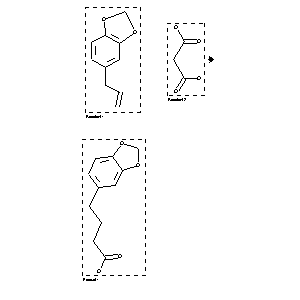

|  |
| FA | RX(1); FLST(1); RX(1) |
Reaction (1 of 1)
| Reaction ID | 1767840 |
| Reactant BRN | 136380; 1751370 |
| Reactant | 5-allyl-benzo[1,3]dioxole; malonic acid |
| Product BRN | 200446 |
| Product | 4-benzo[1,3]dioxol-5-yl-butyric acid |
| No. of Reaction Details | 1 |
Reaction Details (1 of 1)
| Reaction Classification | Preparation |
| Reagent | 1., O3 |
| Catalyst | 3., Pd-C/H2 |
| Other Conditions | 1., Me2S; 2., piperidine-AcOH; |
| Comment | Yield given. Multistep reaction |
| Citation Pointer | 5664588; Journal; Tsuda, Yoshisuke; Hosoi, Shinzo; Ohshima, Takeshi; Kaneuchi, Satomi; Murata, Masami; et al.; CPBTAL; Chem.Pharm.Bull.; EN; 33; 8; 1985; 3574-3577; |
Reference (1 of 1)
| Citation Number | 5664588 |
| Document Type | Journal |
| Authors | Tsuda, Yoshisuke; Hosoi, Shinzo; Ohshima, Takeshi; Kaneuchi, Satomi; Murata, Masami; et al. |
| CODEN | CPBTAL |
| Journal Title | Chem.Pharm.Bull. |
| Language Code | EN |
| (Series) Volume | 33 |
| Number | 8 |
| Publication Year | 1985 |
| Page | 3574-3577 |